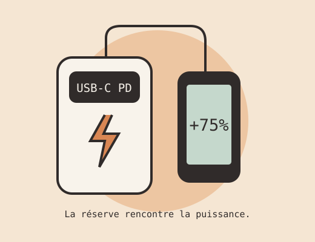

mAh : la taille du réservoir
5 000 à 10 000 mAh conviennent au dépannage et à la poche. Pour plusieurs jours ou plusieurs appareils, 20 000 mAh offrent davantage de réserve, au prix du volume et du poids.
Rechercher
Recherchez une caractéristique, un usage ou un modèle.
Un téléphone à tenir jusqu’au soir, un week-end sans prise ou un PC à alimenter : choisissez la réserve et la puissance utiles à vos appareils.

mAh · réserveW · puissance5 000 à 10 000 mAh conviennent au dépannage et à la poche. Pour plusieurs jours ou plusieurs appareils, 20 000 mAh offrent davantage de réserve, au prix du volume et du poids.
Énergie = capacité en Ah × tension nominale. À 3,7 V, 10 000 mAh représentent environ 37 Wh. Utilisez les Wh inscrits sur le produit : la tension varie selon les cellules.
La puissance ne mesure pas l’autonomie. Pour un téléphone, 20 à 30 W sont un point de départ courant ; pour un PC, vérifiez la puissance USB-C requise, souvent 45 à 100 W ou davantage.
Une prise USB-C ne garantit pas la charge rapide. Batterie, appareil et câble doivent partager le bon protocole. PPS permet un ajustement fin de la tension sur les appareils compatibles.
Un total de 130 W ne signifie pas 130 W par port. Consultez le tableau de répartition : brancher un deuxième appareil peut réduire la puissance du premier.
La puissance d’entrée peut être inférieure à la sortie. Un chargeur secteur et un câble adaptés sont nécessaires ; ils ne sont pas toujours fournis.
L’aimantation seule ne garantit ni certification Qi2 ni charge rapide. Vérifiez téléphone, coque et puissance sans fil ; les pertes et la chaleur réduisent la réserve disponible.
Comparez le poids indiqué et les dimensions. Un câble intégré est pratique mais s’use aussi. Pour des écouteurs ou une montre, cherchez un mode faible courant.
Simulation filaire : batterie externe supposée à 3,7 V, téléphone à 3,85 V. Recharges équivalentes = (mAh externe × 3,7 × rendement) ÷ (mAh téléphone × 3,85). Le rendement est une hypothèse ajustable, pas une mesure. L’utilisation du téléphone, l’usure et la chaleur réduisent le résultat.
Caractéristiques annoncées par les fabricants, consultées le 23 octobre 2026. Cette sélection n’est ni exhaustive ni un classement de tests. Prix, disponibilité, rendement et endurance ne sont pas mesurés ici.
4 modèles documentés.
PD / PPS annoncé. Pour un Galaxy compatible, vérifier le câble et le mode de charge. La puissance se partage entre appareils.
Fiche fabricant ↗65 W maximum sur une sortie ; 87 W désigne le total partagé. Le câble intégré évite un accessoire à transporter.
Fiche fabricant ↗100 W sur USB-C, mais une réserve de 44,4 Wh : puissance élevée et capacité sont deux choses différentes.
Fiche fabricant ↗100 W sur USB-C1, jusqu’à 130 W au total. Énergie déclarée : 72 Wh. Vérifier la répartition lorsque plusieurs ports sont occupés.
Fiche fabricant ↗Aucun modèle documenté ne répond à ces repères. Réduisez vos critères ou vérifiez d’autres références auprès des fabricants.
Les consignes IATA 2026 limitent les batteries externes à deux par passager, chacune ne dépassant pas 100 Wh. Elles voyagent en cabine, avec leurs contacts protégés, et ne doivent pas être rechargées en vol. Une compagnie peut imposer des restrictions supplémentaires.
Lisez l’énergie marquée sur le boîtier ; une estimation en mAh ne remplace pas cette indication. Vérifiez les règles de toutes les compagnies de votre itinéraire avant le départ, notamment l’utilisation à bord et le rangement.
Consignes passagers IATA 2026 ↗0 point sur 8 vérifié.
Pas directement : il faut tenir compte des tensions et des pertes de conversion. Le calculateur donne des scénarios explicites plutôt qu’une promesse.
Avec du matériel conforme et compatible USB-C PD, les appareils négocient la puissance : 100 W est un maximum disponible. Vérifiez la qualité du câble et la compatibilité des protocoles.
Non. La prise doit accepter la recharge USB-C Power Delivery, à une tension et une puissance compatibles. Certains PC ne se rechargent que sur leur connecteur dédié.
Seulement si le fabricant confirme la charge traversante (« passthrough ») sur cette référence. Elle ne remplace pas automatiquement une alimentation de secours sans interruption.
Suivez la notice, évitez la chaleur et contrôlez régulièrement le boîtier et les câbles. Une batterie gonflée ou endommagée doit cesser d’être utilisée et rejoindre une filière de collecte adaptée.